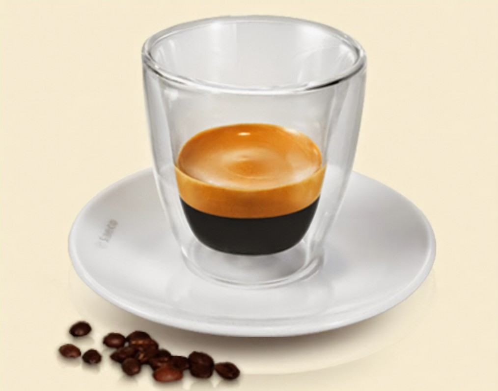
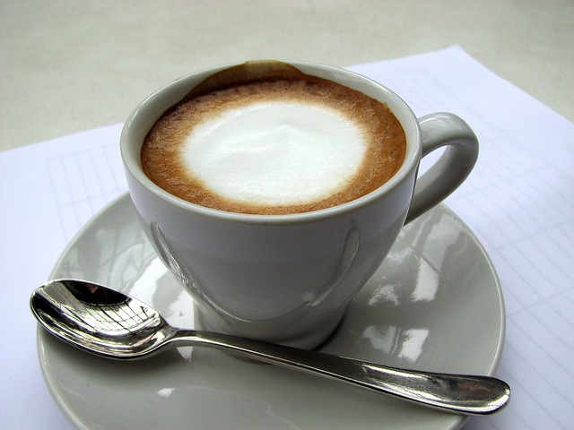
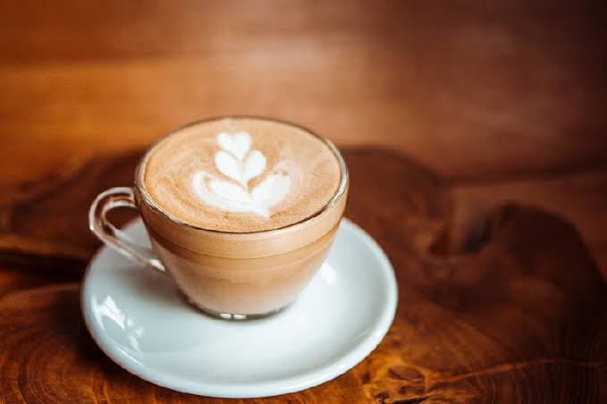
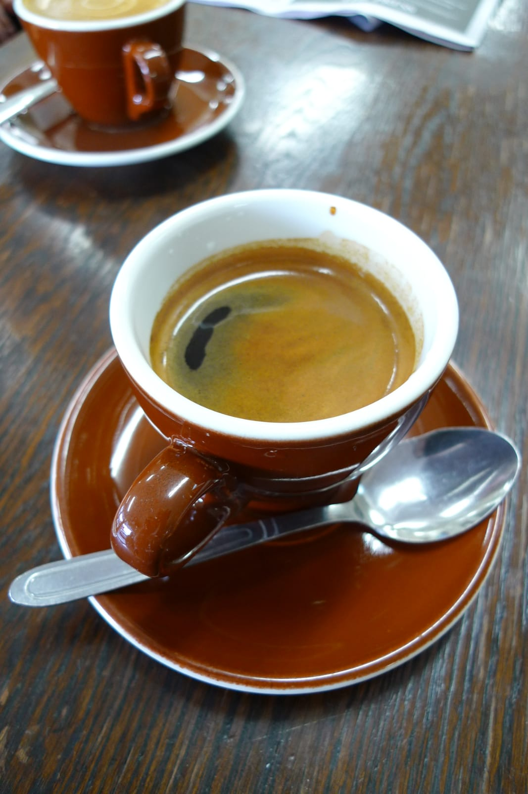
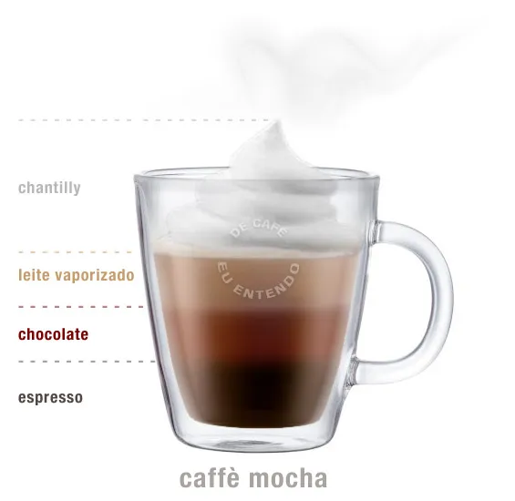
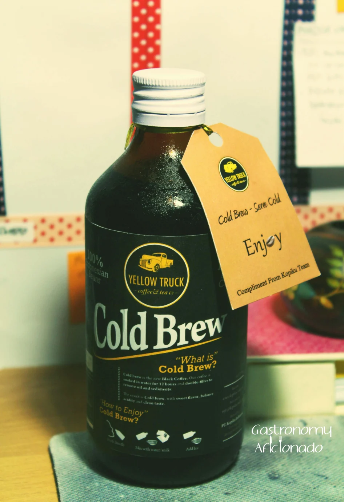
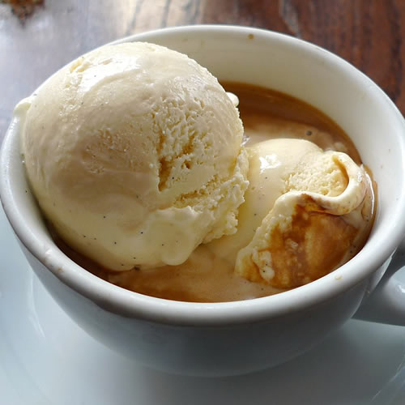

Explorando o Mundo do Café
O café na verdade é uma Cereja, sabia? Os grãos que você prepara são, na verdade, as sementes torradas de um fruto, que é conhecido como grão cereja ou simplesmente cereja de café. Se você morder a cereja, vai encontrar duas sementes que se desenvolvem com os lados achatados.
Curiosidades
As pessoas bebem café há muito tempo, mas o que talvez poucos saibam, é que há empresas que têm usado a cereja do café desperdiçada para fazer farinha. Pode ser usada em muffins, pães, chocolates, molhos, etc. Mas não tem gosto de café: dependendo da variedade, geralmente tem notas florais, cítricas ou de frutas torradas.
O Dia Mundial do Café é comemorado anualmente em 14 de abril. A data homenageia uma das bebidas mais adoradas do mundo: o café! Seja ele carioca, pingado, cappuchino, americano ou expresso, o café é uma paixão mundial, sem dúvidas. De acordo com o Sumário Executivo - Café, de setembro de 2021, documento da responsabilidade do Ministério da Agricultura Pecuária e Estabelecimento, o Brasil é considerado o maior produtor e exportador de café do mundo, seguido do Vietnã e da Colômbia.
Pega Leve em...
Por ser um estimulante, a cafeína apresenta potenciais riscos se consumida em quantidades excessivas. Recomenda-se a mulheres grávidas que reduzam a ingestão de cafeína, uma vez que a substância está associada a bebês com baixo peso ao nascer e, às vezes, a abortos espontâneos. As autoridades de saúde britânicas recomendam que grávidas não consumam mais de 200 miligramas de cafeína por dia. Isso é um pouco mais que uma caneca de café filtrado ou duas canecas de café instantâneo.
Conteúdos Utilizados dos sites Bbc.com e Calendarr.com. Acesse-os para saber mais.
10 tipos de bebidas feitas do café
Café Expresso
Trata-se da forma mais clássica de preparo do café. Foi inventado na Itália em 1884, quando a máquina de espresso
foi patenteada por Angelo Moriondo de Turim. A máquina sofreu alterações ao longo dos anos e, em 1938, Cresemonesi
introduziu uma máquina de espresso com pistão, que eliminou o gosto de queimado provocado pela pressão do vapor.
Tantos anos mais tarde, o espresso ainda é uma das bebidas mais consumidas pelos amantes de café. Hoje, é possível
encontrar máquinas de café espresso para fazer em casa; entre elas, se destacam as de café em cápsula como Nespresso
por sua praticidade e diversidade de sabores.
Café Ristretto
É uma versão mais concentrada do café espresso como conhecemos. Entre os tipos mais populares de café, o ristretto é o que tem maior intensidade. Isso acontece pois utiliza-se a quantidade de café habitual para um espresso com metade da quantidade de água. O resultado é uma bebida de sabor forte e concentrado.
Macchiato
Uma das mais populares bebidas à base de café, o café macchiato é um espresso com um pouco de espuma de leite. A receita tradicional pedia o leite em forma líquida, mas a adição da espuma deixava clara a presença de leite na bebida. Aos poucos, “café macchiato” passou a se referir a espresso + espuma.
Café Latte
O Latte é um tipo de café consideravelmente conhecido, que mistura café com leite vaporizado. Sua receita original, além da mistura de leite com o café espresso, traz um centímetro de espuma de leite sobre a bebida.
Café Americano
O americano é um estilo preparado a partir da adição de água quente no café. Isso dá um sabor diferente à bebida, apesar da força semelhante à do café regular. A proporção é de uma colher cheia de café (cerca de 7 ou 8 g) para cada 100 ou 150 ml de água fervente. Para preparar um café americano em casa, é preciso estar atento à torra (clara ou média) e à moagem (média).
Capuccino
A bebida, cujo nome significa “capuz pequeno” em italiano, foi nomeada dessa maneira em homenagem a frades anglicanos, cujos hábitos eram feitos num tecido de cor semelhante à dela. Tradicional na Itália e muito consumida no Brasil, a bebida é feita com espresso, leite vaporizado e espuma de leite, podendo ter sobre a espuma chocolate, canela ou açúcar.

Mocha ou Mocaccino
Ambos os nomes são usados para tratar da mesma bebida de aspecto semelhante ao cappuccino. A maior diferença entre ele e o café mocha (ou mocaccino) está no chocolate, colocado em calda ou em pó na base do copo. Em seguida, se despeja o espresso e enfim, uma pequena quantidade de leite vaporizado (ingrediente predominante no cappuccino tradicional), finalizando com uma dose de chantilly pulverizado com chocolate em pó ou canela.
Café Gelado
Também chamado de Iced Coffee, essa bebida é uma boa pedida para dias quentes. O café gelado se caracteriza principalmente pelo resfriamento da bebida quente; esse resfriamento pode ser natural (atingindo a temperatura ambiente), por banho maria, na geladeira ou com coisas frias, como gelo ou sorvete.

Cold Brew
Como já falamos aqui no blog, o Cold Brew é um café que passa por infusão a frio. Cada vez mais famosa, essa bebida tem Cold Brew True Coffeeconquistado seu espaço nas cafeterias e na casa de amantes de café. Trata-se de um café com sabor mais aromático e menos ácido do que o tradicional, que pode ser consumido em preparos quentes ou gelados.
Café Affogatto
O Affogatto tradicional é feito com sorvete de creme, mas o sabor pode ser agradavelmente substituído por outros como baunilha, por exemplo. Outra coisa que pode ser alterada é o café espresso por uma dose de café feito na cafeteira italiana. Essa mudança, pelo que dizem, traz até mesmo um charme para a bebida, já que a Moka pode ser levada à mesa.
Conteúdos utilizados do site Blogue.ucoffe.com. Acesse para ver mais bebidas feitas com o café e outros conteúdos de café.